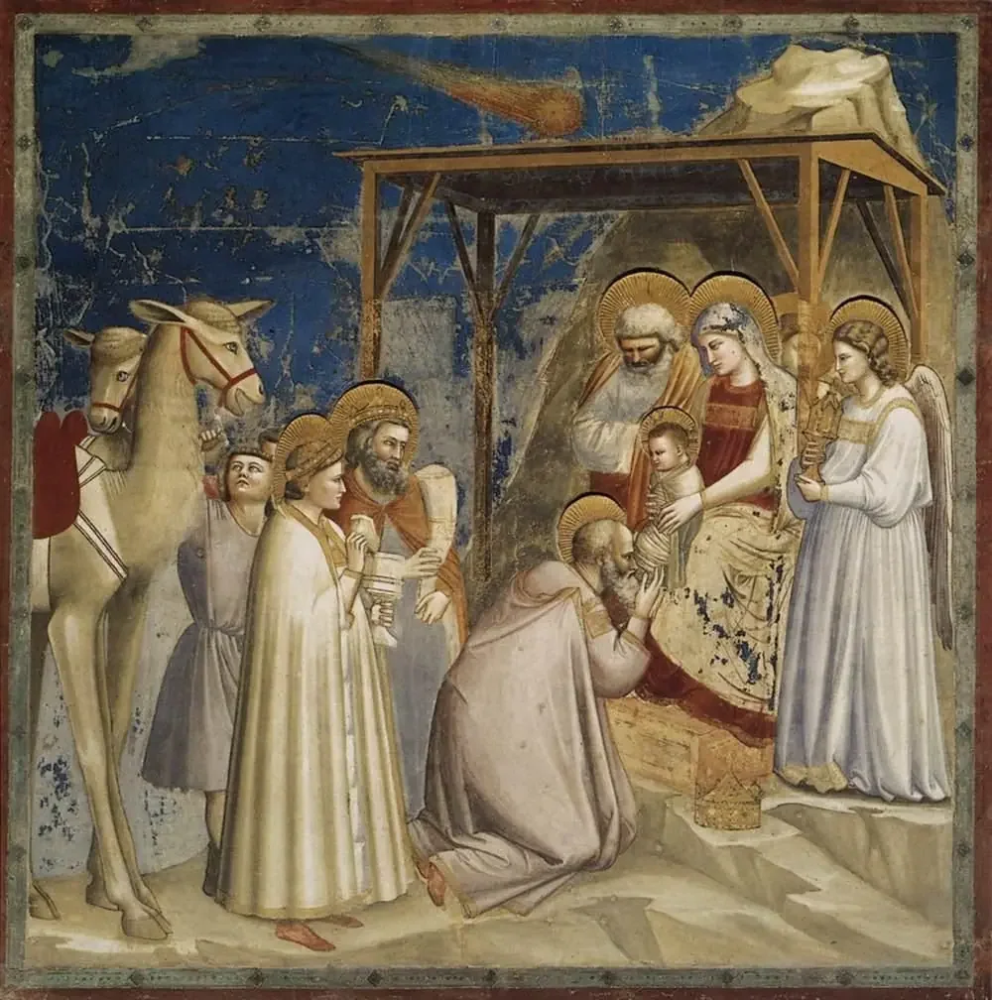
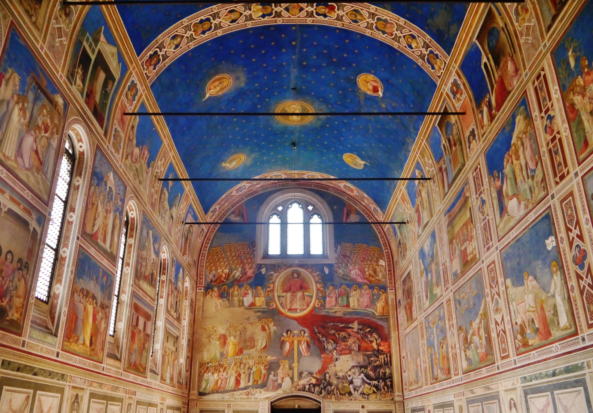
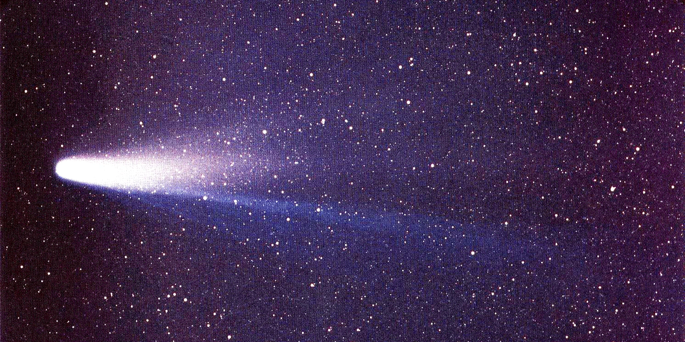
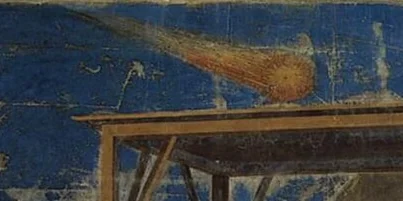
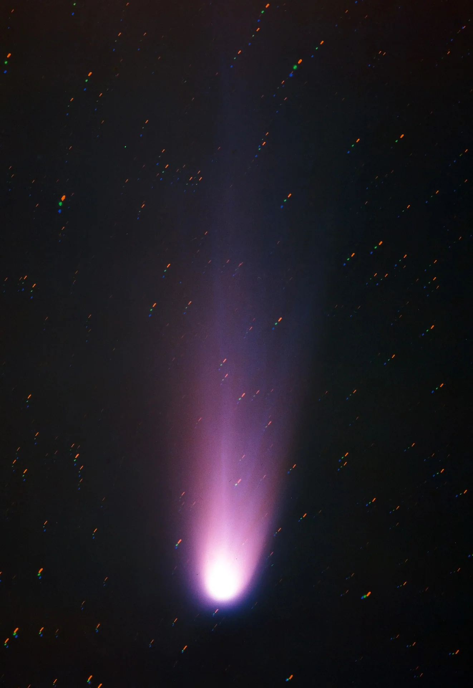
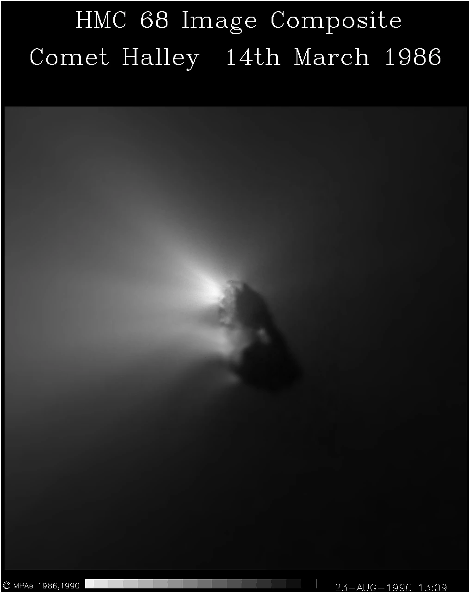

아직 펼치지 않은 카드베들레헴, 그 밤의 자리 · 3동방박사의 경배베들레헴 하늘의 별에 꼬리가 달렸어요. 조토는 왜 별을 이렇게 그렸을까요?별에 꼬리가 달렸어! 이런 별 본 적 있어?
1303~1305년 · 조토이탈리아 파도바 · 스크로베니 예배당
동방박사의 경배
이탈리아 파도바의 작은 예배당 벽에, 베들레헴의 별(아기 예수가 태어났을 때 동방박사들을 이끌었다는 별)이 꼬리 긴 혜성으로 그려져 있어요. 화가 조토가 밤하늘에서 본 혜성을 그렸다고 전해져요. 그림 속 혜성과 1986년에 찍은 핼리 혜성 사진을 손잡이로 겹쳐 보세요.
옛날 화가가 별에 꼬리를 달아 그렸어. 진짜 혜성 사진이랑 겹쳐 보면 얼마나 닮았을까?
검수 전 시안이에요(기준서 1판). 장면에는 기록에 있는 것만 옮겼고, 의견이 갈리는 것은 그렇다고 밝혔어요. 상상은 ‘눈 감고 상상해 보기’에만 썼어요.
시안 확인용카드 단계 미리 보기
1
파란 하늘의 예배당
이탈리아 파도바의 스크로베니 예배당이에요. 옛 로마 원형 경기장 터를 사들여 예배당을 지은 은행가 엔리코 스크로베니의 이름을 땄어요. 피렌체의 화가 조토가 1303년부터 1305년까지 안쪽 벽을 그림으로 가득 채웠어요.
둥근 천장은 별이 박힌 파란 하늘이에요. 둥근 테 안에는 마리아와 그리스도(예수), 예언자들이 있어요. 벽에는 마리아와 그리스도의 삶이 여러 칸으로 이어지고, 그 가운데 한 칸이 「동방박사의 경배」예요. 동쪽에서 온 박사들이 아기 예수에게 엎드려 절하는(경배하는) 그림이에요.

프레스코는 덜 마른 회반죽(석회에 모래와 물을 섞어 바르는 벽 재료) 위에 물감을 칠해 벽과 함께 굳히는 그림이에요. 2021년, 이 예배당은 파도바의 다른 1300년대(14세기) 프레스코 그림들과 함께 유네스코 세계유산이 되었어요.
천장을 봐! 파란 하늘에 별이 가득해.
물어보기예배당 천장을 왜 밤하늘처럼 칠했을까?
2
별에 꼬리가 달렸어요
마태복음(신약 성경의 첫 책)은 동방(동쪽 나라)에서 온 박사들이 별을 보고 찾아왔고, 그 별이 아기 예수가 있는 곳 위에 머물렀다고 적었어요. 조토는 그 별을 전해 오던 별 모양 대신, 불꽃 같은 꼬리를 길게 끄는 혜성으로 그렸어요.
맨 앞의 늙은 박사는 왕관을 땅에 내려놓고 무릎을 꿇었어요. 왼쪽에는 박사들이 타고 온 낙타가, 오른쪽에는 천사가 서 있어요.
미술사학자 로버타 올슨은 1979년, 이 혜성이 1301년에 나타난 핼리 혜성을 보고 그린 것이라고 보았어요. 핼리 혜성은 평균 76년마다 태양 가까이 돌아오는데, 1301년에도 이탈리아 하늘에 나타났어요.
올슨과 천문학자 제이 파사초프는 조토가 혜성의 생김새를 잘 알고 그렸다고 썼어요. 다만 2026년에 나온 한 논문은 1304년에 보인 다른 혜성일 수 있다고 보아, 아직 의견이 갈려요. 어느 쪽이든, 조토가 실제 혜성을 보고 그렸다고 보는 것은 같아요.
별에 꼬리가 있어! 할아버지 박사님은 왕관을 내려놓고 무릎을 꿇었어.
물어보기화가는 왜 별에 꼬리를 그렸을까?
3
그림 속 혜성, 사진 속 혜성
조토가 그린 혜성을 크게 보고, 1986년 3월 8일 이스터섬에서 찍은 핼리 혜성 사진과 겹쳐 보세요.
밝은 머리와 뒤로 길게 흩어지는 꼬리. 680년쯤을 사이에 두고 그림과 사진이 마주 서요.
가운데 손잡이를 밀어 그림 속 혜성과 사진 속 혜성을 겹쳐 보세요.


왼쪽 · 「동방박사의 경배」의 혜성 부분 · 그림: 조토 · 퍼블릭 도메인 · 위키미디어 공용(Web Gallery of Art)
오른쪽 · 핼리 혜성, 1986년 3월 8일(이스터섬) · 사진: NASA/W. Liller · 퍼블릭 도메인 · 위키미디어 공용
그림은 혜성의 머리가 오른쪽, 사진은 왼쪽에 있어요. 그래도 밝은 머리와 뒤로 길게 끌리는 꼬리는 닮았어요. 이 혜성이 정말 핼리 혜성인지는 아직 의견이 갈려요.
손잡이를 밀어 봐. 그림 속 혜성이랑 진짜 혜성 사진이야.
물어보기둘은 어디가 닮았고 어디가 달라?
4
조토라는 이름의 탐사선
1985년 7월 2일, 유럽우주국(ESA)은 탐사선 ‘조토’를 쏘아 올렸어요. 유럽우주국은 핼리 혜성을 베들레헴의 별로 그린 화가의 이름을 땄다고 소개해요.
1986년 3월 14일, 탐사선 조토는 핼리 혜성의 핵(혜성의 단단한 몸통)에서 596km 떨어진 곳까지 다가가, 처음으로 혜성 핵의 모양을 찍었어요. 오른쪽이 탐사선 조토가 찍은 핵이에요.


가장 가까이 가기 7.6초 전, 1g쯤 되는 먼지 알갱이에 부딪혀 30분 남짓 신호가 끊겼다가 다시 이어졌어요. 탐사선 조토가 만난 핼리 혜성은 2061년에 다시 돌아와요.
조토와 그 무렵 화가들처럼, 하늘에서 본 것을 그린다면 무엇을 그릴까요?
화가 이름을 딴 우주선이 혜성을 만나러 갔어! 오른쪽 검은 덩어리가 혜성의 핵이야.
물어보기2061년에 핼리 혜성이 돌아오면 너는 몇 살일까?
눈 감고 상상해 보기
들어가기 전에 머무는 대기실에서 기다리다 예배당 문이 열려요. 서늘한 공기 속으로 들어서면 머리 위가 온통 파란 밤하늘이에요. 벽 한 칸에서 꼬리 긴 혜성이 나무 지붕 위로 흘러가요. 사람들은 소리를 낮추고 천천히 고개를 돌려요.
눈을 감아 봐. 문이 열리면 천장이 온통 파란 하늘이야. 벽에는 꼬리 달린 별이 반짝, 다들 조용히 올려다봐.
나의 자리
내가 직접 본 것 가운데, 누군가에게 꼭 그려서 보여 주고 싶은 장면은 무엇인가요?
밤하늘에서 본 것 중에 제일 신기했던 건 뭐야?
마음에 닿는 한 줄을 고르거나 직접 써 보세요. 한 줄을 남기면 이 자리의 도장이 찍혀요. 이 기기에만 저장돼요.
더 깊이
이야기를 보다 궁금해질 만한 것들이에요. 답을 읽거나 짧은 영화로 보세요.
박사가 왜 왕관을 써요? 박사들은 누구고, 누구 앞에 무릎을 꿇었어요?
먼지 한 알에 부딪혔는데 왜 신호가 끊겨요? 탐사선은 어떻게 버텼어요?
뒷이야기
아직 펼치지 않은 이야기예요. 누르면 이야기가 펼쳐지고 색이 돌아와요. 더 알고 싶으면 근거를 따라가 보세요.
다 펼치면, 다음에 오실 때 새 이야기가 찾아와요.
오늘의 뒷이야기는 여기까지예요. 다음에 오시면 새 이야기가 기다리고 있어요.
펼친 뒷이야기 · 누르면 다시 볼 수 있어요
더 찾아보기
기록마다 다른 점
그 혜성은 핼리 혜성일까? 올슨(1979)과 유럽우주국은 1301년의 핼리 혜성으로 소개해요. 2026년 영국천문학회지에 실린 마크 키저의 논문은 1301년의 핼리 혜성이 그리 밝지 않았을 수 있다고 보고, 1304년 성탄절 무렵 엿새 동안 보인 혜성을 유력한 후보로 들었어요. 세 후보 모두 물음이 남아 있다고도 적었어요.
그린 해 예배당 공식 누리집과 파도바시는 벽화 전체를 1303~1305년으로, 올슨과 파사초프는 「동방박사의 경배」를 1303년 무렵으로 적었어요.
가장 가까이 간 때 유럽우주국은 1986년 3월 14일로 적었고, 막스 플랑크 태양계 연구소는 세계시로 3월 14일 0시 3분이라고 적었어요. 한국 시간으로는 3월 14일 아침이에요.
말씀과 함께 읽기
그리스도인들은 성탄의 별을 마태복음 말씀과 함께 읽어 왔어요. 말씀은 뜻만 옮기고, 본문은 대한성서공회 개역개정으로 이어 드려요.
마태복음 2장 1~11절 동방에서 온 박사들이 별을 보고 찾아왔고, 그 별이 아기가 있는 곳 위에 머물렀다는 말씀이에요. 박사들은 엎드려 경배하고 황금과 유향과 몰약을 드렸어요.
직접 가 보기
확인한 날 · 2026년 11월 18일 · 바뀌기 쉬운 정보라 정기적으로 다시 확인해요
스크로베니 예배당은 이탈리아 파도바의 에레미타니 광장에 있어요. 들어가려면 꼭 미리 예약해야 해요. 표에 적힌 시간 5분 전까지 냉방이 된 대기실 입구에 가고, 예배당 안에서는 15분쯤 머물러요. 늦으면 들어가지 못해요.
그림을 지키려고 한 번에 25명까지만 들어가요. 여는 시간과 값은 바뀌기 쉬워서, 가기 전에 공식 누리집에서 다시 확인해 주세요.
그림과 사진 겹쳐 보기 금박
‘그림 속 혜성, 사진 속 혜성’에서 손잡이를 양쪽 끝까지 밀면 카드에 금박이 입혀져요.
손잡이를 끝까지 밀어 그림과 사진을 다 보기
하늘에서 본 것 그리기 채색
둘 가운데 하나만 해도 카드가 채색돼요.
하늘에서 본 것 가운데 무엇을 그릴지 고르기
아이와 함께 ‘영화처럼 보기’를 끝까지 보기
근거 보기 (18)
- 오리게네스, 『켈수스 반박』 1권 58장(New Advent 영어 번역) — 동방의 별은 혜성처럼 가끔 나타나는 새 별(열쇠 1)
- World History Encyclopedia(2022): Magi — 마고이 = 페르시아 종교의 제사장, 2세기 무렵부터 왕으로(열쇠 2)
- 파도바 우르브스 픽타(유네스코 세계유산 누리집): Scrovegni Chapel — 은행가 엔리코 스크로베니(첫째 장면 길잡이)
- 스크로베니 예배당 공식 누리집: How to visit — 별이 박힌 파란 천장과 둥근 테의 인물들, 대기실 5분 전, 25명, 15분
- 스크로베니 예배당 공식 누리집: 관람 규칙 — 미리 예약, 늦으면 못 들어감, 15분
- 이탈리아 관광청(italia.it): Scrovegni Chapel — 엔리코 스크로베니, 로마 원형 경기장 터, 피렌체 화가 조토 1303~1305, 에레미타니 광장(첫째 장면 길잡이)
- 파도바시 문화 누리집: Scrovegni Chapel — 1303~1305년
- 유네스코 세계유산: Padua’s fourteenth-century fresco cycles(2021)
- Fodor’s: Cappella degli Scrovegni — 마리아와 예수의 삶을 여러 단으로
- Roberta J. M. Olson, “Giotto’s Portrait of Halley’s Comet”, Scientific American 240(5), 1979
- R. J. M. Olson · J. M. Pasachoff, “Comets, Meteors, and Eclipses: Art and Science in Early Renaissance Italy”(1999 미국천문학회 행성과학부 발표 요약) — 전통적인 별 대신 혜성, 로렌체티의 별똥별(1316~1320), 타데오 가디의 일식
- 같은 제목의 논문, Meteoritics & Planetary Science 37(2002) — 애리조나 대학교 자료실
- Mark Kidger, “What was the comet depicted in Giotto’s Adoration of the Magi?”, 영국천문학회지 136(1), 2026 — 1301년 핼리 혜성에 대한 물음과 1304년의 두 혜성
- Chet Raymo, “Giotto’s ‘star’”(1988) — 1301년 이탈리아 하늘의 핼리 혜성
- 유럽우주국(ESA): Giotto overview — 이름의 까닭, 1985년 7월 2일 발사, 1986년 3월 14일 핼리 혜성, 첫 혜성 핵 모양, 먼지 알갱이와 끊긴 신호, 1초에 68km · 23cm 띄운 두 겹 방패(열쇠 3)
- 막스 플랑크 태양계 연구소: Giotto — 596km, 1986년 3월 14일 0시 3분(세계시), 핼리 다색 카메라
- NASA: 1P/Halley — 평균 76년의 공전 주기
- SEDS: Comet 1P/Halley — 2061년에 돌아옴
그림·사진·소리 출처
‘처음 만나는 기독교 문화’의 깊은 카드예요. 카드 단계와 남긴 글은 이 기기에만 저장돼요.